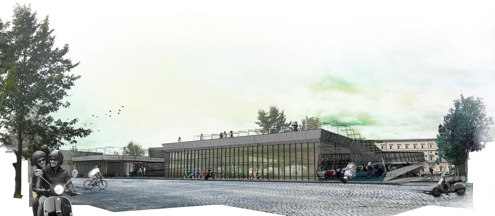
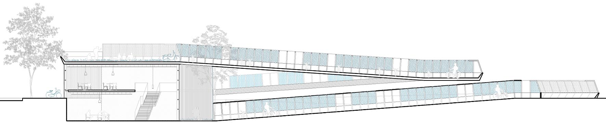
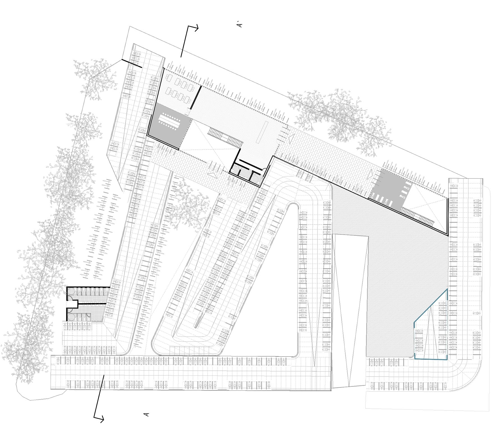

maqueta de desarrollo de proyecto

fachada principal

sección transversal AA

planta de acceso

vista desde el aparcamiento
La propuesta para resolver el problema del aparcamiento y circulación de motos en Roma se basa en la definición de un módulo mínimo de 7.2x1.2m, que permite el aparcamiento de motos en los dos extremos, dejando un espacio central de tres carriles para la circulación tanto de bicicletas y motos, como de peatones.
El proyecto se resuelve con la repetición del módulo base creando una cinta que se pliega/dobla adaptándose de esta manera a los diferentes escenarios que puedan darse en diferentes espacios de la ciudad.

De esta manera se consigue crear un recorrido en zig-zag ascendente y/o descendente, situando el programa complementario (talleres, aulas, administración o aseos público) en unos volúmenes a los que se accede desde la calle y sobre los que apoyan las diferentes cintas, generando en su cubierta parques y miradores.

A nivel constructivo se define una pieza masiva de hormigón que constituye el forjado horizontal sobre el que se circula y una estructura metálica ligera.

Esta pieza montable y desmontable permite cubrir o descubrir las plazas de aparcamiento, generando así distintas situaciones en función de diferentes parámetros como son la utilización, el clima o las visuales.

Este sistema permite la ampliación del aparcamiento, añadiendo más módulos en altura o desmontarlo y situarlo en otras parcelas.